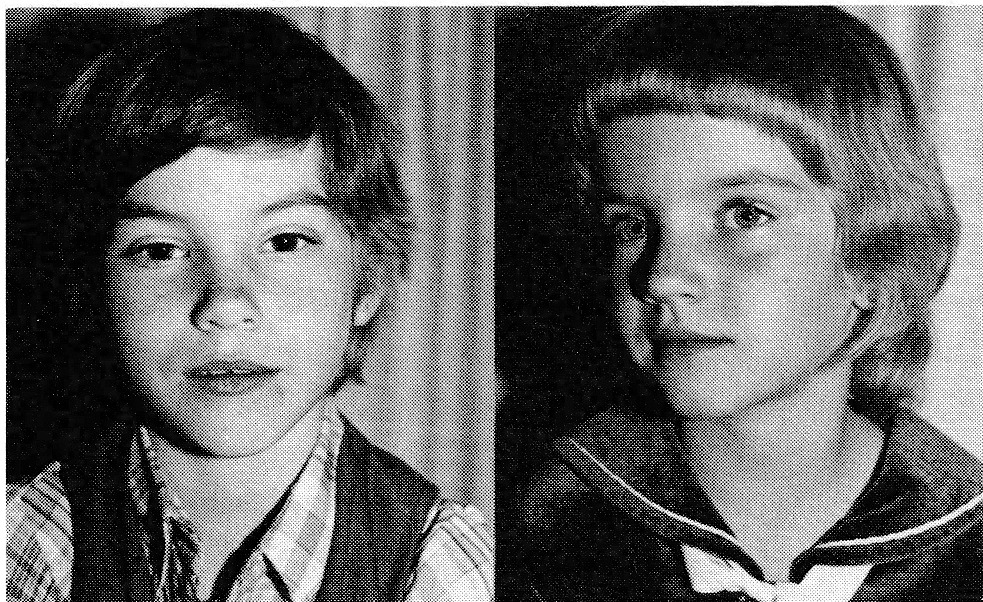
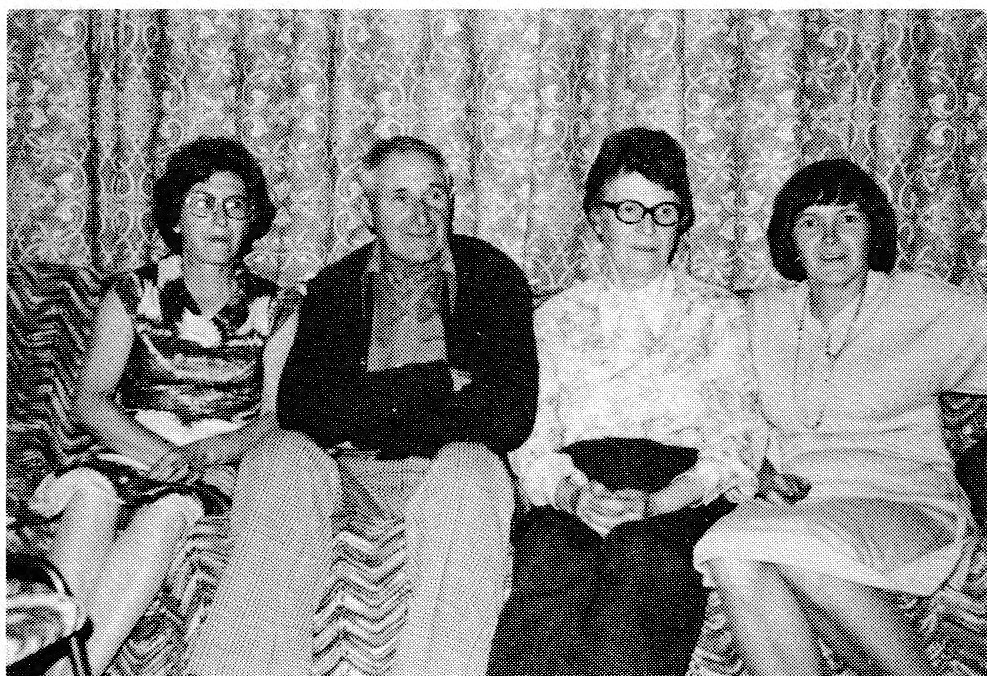
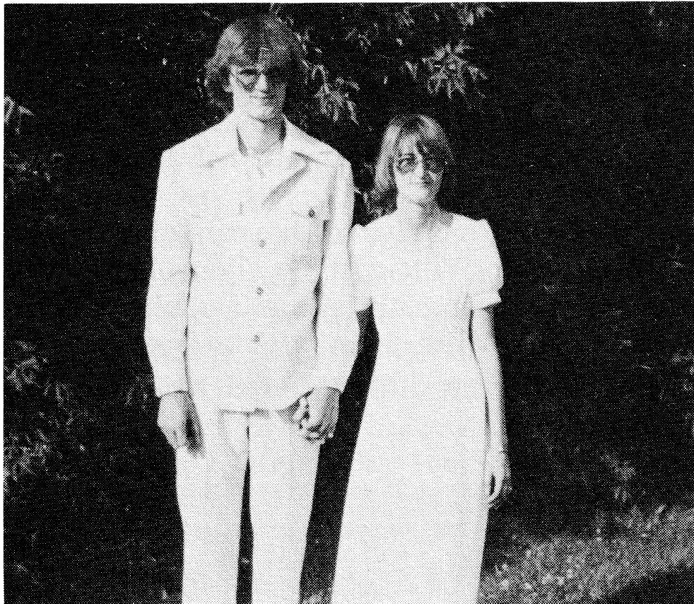
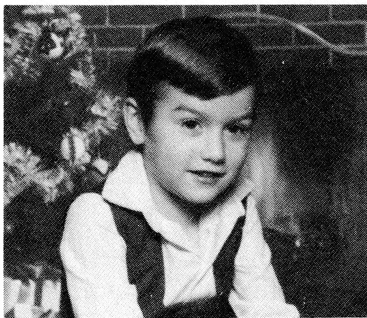

night and I was busy in the store filling grocery orders when the train pulled in. A good neighbor, George Laplante, helped Verna off the train. Years later we moved the house across the road, added on and renovated it. But I'll always remember our first house, as I had built it for $125.00 hard cash. I made the bricks for the chimney - in fact, they were too thin and when they dried they shrank quite a bit. I made doors and windows all out of rough lumber. The break-fast nook in our home was made out of rough lumber and sanded down.
Our family consisted of two daughters: Dawn, who was born in Tisdale January 25, 1936, and Lynn, born in Hudson Bay June 3, 1944. Both girls attended White Poplar School, mar-ried, have families and today reside in Birch Hills, Sask.

While we were farming, we had ten to twelve head of cattle and milked a cow or two. There was more work when we had cattle and slowly we got rid of them. We operated our store for thirty years and have many fond memories of hours spent visiting with those who came for groceries. I retired in 1963, then I went to work for McMillan Bloedel for four years, Macleods for five years and then to the Plywood Factory for three months. I took an active role in the affairs of the community: secretary of White Poplar School Board, treasurer of Veillardville Commu-nity Hall and was on the Board of the Hudson Bay Union Hospital.
Life in Veillardville was most interesting - the people made it that way. When times were hard, everyone pulled together and helped each other. I remember when Ed Block's dad died, I was asked by Ed to arrange for having the coffin made. Gus Vanderbilt built the coffin, Mrs. Rachel Strasser upholstered it on the inside and outside, while Bill Cockwill made the necessary handles.
Verna and I are enjoying our retirement. We lived in our home by the tracks until the fall of 1985, when we sold our farm and moved into Hudson Bay where we presently live in our new home on Churchill Street. We still enjoy garden-ing, picking berries, playing cards and reading.


